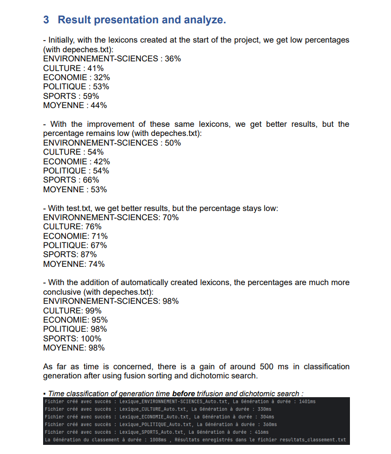

Ce projet s'est déroulé en décembre 2023. Nous avons utilisé Java sur l'IDE IntelliJ. Les compétences évaluées étaient le développement d'applications et l'optimisation des performances informatiques.
Cette SAE a été réalisée en binôme, avec une répartition équitable des tâches.
L'objectif était de créer un algorithme capable de trier des dépêches en utilisant un lexique automatique. Ce programme permet de classer automatiquement les dépêches en cinq catégories : environnement/sciences, culture, économie, politique et sports.
Le fonctionnement de notre algorithme est simple : il lit d'abord d'anciennes dépêches et crée une liste de mots pour chaque thème. Le programme attribue un score à chaque mot en fonction de sa fréquence d'apparition dans chaque catégorie.
Une fois cette liste établie, l'algorithme analyse les dépêches actuelles. Pour chaque dépêche, il attribue un score à chaque catégorie en fonction de la fréquence des mots correspondants.
Ensuite, la dépêche est classée dans la catégorie ayant le score le plus élevé.
Pour optimiser le temps de recherche et le nombre de comparaisons, nous avons mis en place une recherche dichotomique et un tri fusion.
Notre algorithme atteint un taux de réussite de près de 75 %. En enrichissant nos lexiques, il pourrait approcher les 100 %.

Illustration du projet lors de l'analyse de nos résultats